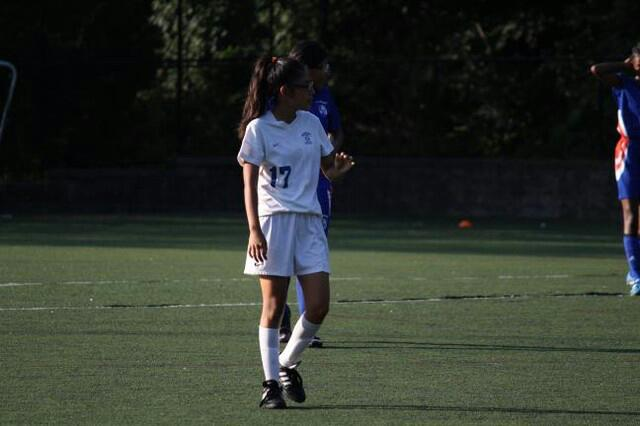
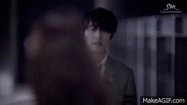
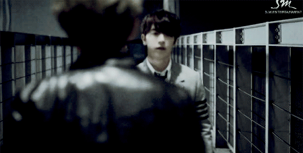
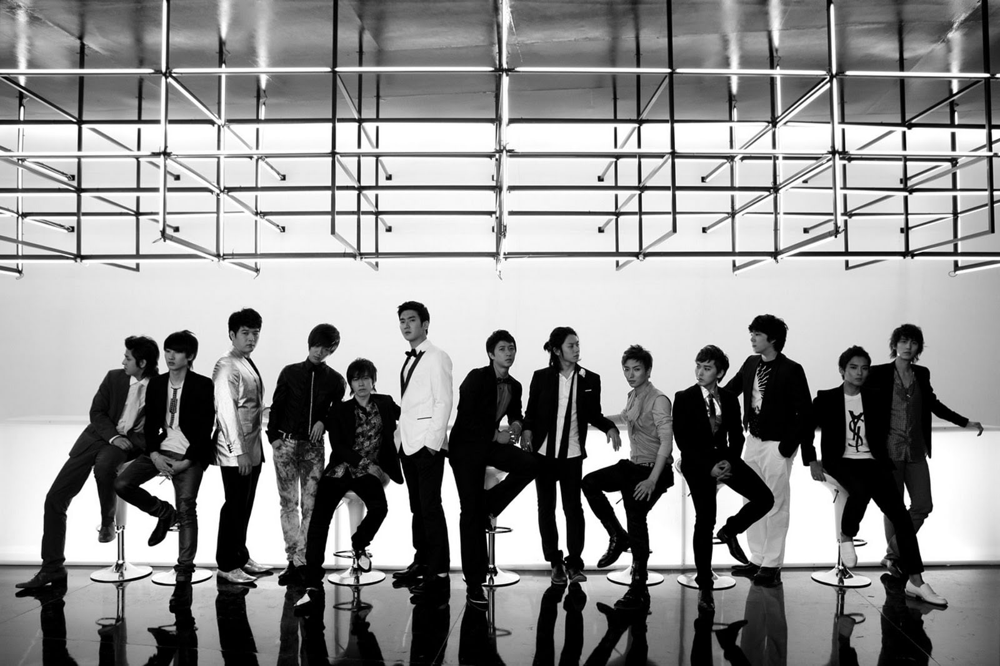
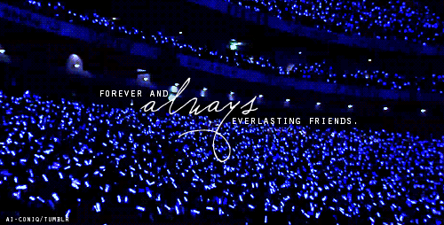
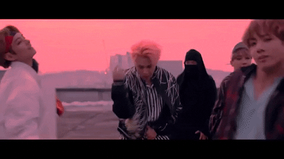
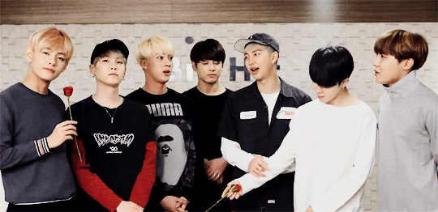

The Not-So-Interesting Kpop Playlist of Ana Leonardo

The first song I listened to was:
 
"Growing pains,"
by Juper Junior D&E
Super Junior started with 15 members, but as time went on they decreased with 13. They are one of Korea's greatest band, debuting in November 6, 2005. Their fandom is called E.L.F (Ever Lasting Friends).
 
Click ME
My Favorite Band
 
BTS!